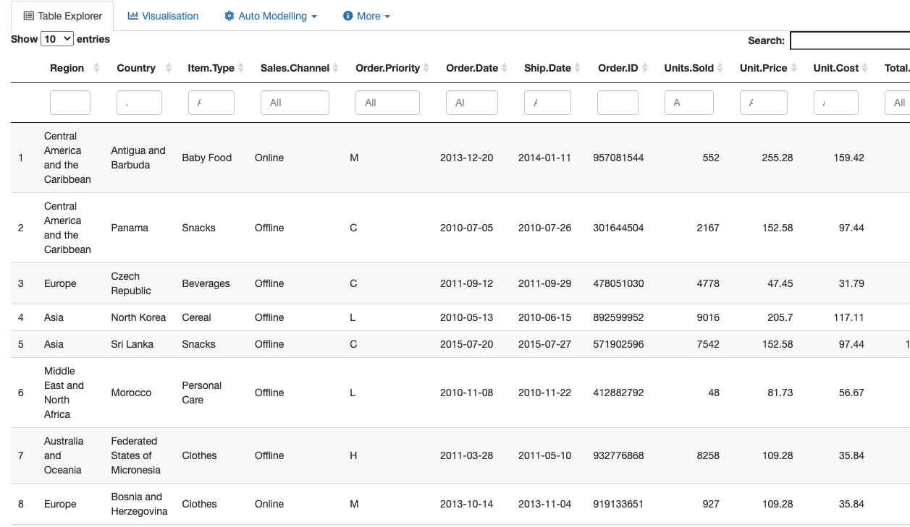

Table Explorer is the base feature of hk48, built on the DT library in R. Once you’ve uploaded your data, it’s straightforward to search through the table either using column-wise filters or the overall search bar.

Once you’ve uploaded your files, the Table Explorer will automatically populate with a paginated version of your data. There are some functions the Table Explorer enacts on your data before it is displayed that may require some user input.
First is confirming whether or not the data has a header. This is the first option at the top of the hk48 sidebar. Tick if the data has a header, Untick it if not.
Second is what type of separator is used to delimit your data. Currently, the options are Comma, Semicolon, and Tab, though a ‘custom’ option is being developed for the near future.
Third is whether or not the character fields in your data have double, single, or no quotation marks. It will be immediately evident if the wrong Quote option is in place. The Quote buttons in the sidebar can be used to select the appropriate option.
Fourth: in the case of datasets with large volumes of content in certain fields, the option to restrict the number of rows displayed by default in the Table Explorer to six. This is recommended to improve app performance if your data file contains large json or key-value fields.
Lastly, hk48 will enforce an ISO 8601 date format on all date fields in your data. This is done by using a guessing algorithm from the lubridate package in R, which will attempt to interpret the date format of your file’s date fields and convert them to YYYY-MM-DD. This is done in order to simplify working with dates. An option to convert to custom date formats is being developed.